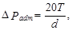
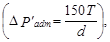
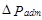
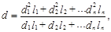
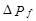
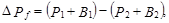
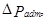
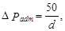
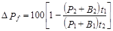
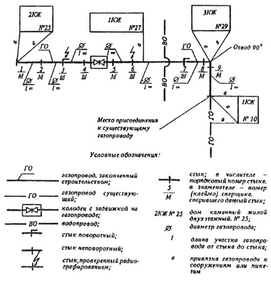

СТРОИТЕЛЬНЫЕ НОРМЫ И ПРАВИЛА
ГАЗОСНАБЖЕНИЕ
СНиП 3.05.02-88*
Москва 1995
РАЗРАБОТАНЫ институтом Гипрониигаз Минжилкомхоза РСФСР (канд. экон. наук В.Г. Голик, канд. техн. наук М.С. Куприянов; Г.П. Чирчинская) с участием Мосгазниипроекта Мосгорисполкома, УкрНИИинжпроекта Минжилкомхоза УССР, Академии коммунального хозяйства им. К.Д. Панфилова и объединения Росгазспецстрой Минжилкомхоза РСФСР, треста Мособлспецстрой-3 Главмособлстроя.
ВНЕСЕНЫ ГП «Росстройгазификация».
ПОДГОТОВЛЕНЫ К УТВЕРЖДЕНИЮ Управлением стандартизации и технических норм в строительстве Минстроя России (Н.А. Шишов).
СНиП 3.05.02-88* является переизданием СНиП 3.05.02-88 с изменением № 1, разработанным Гипрониигазом с участием ВНИИСТа и введенным в действие на территории Российской Федерации приказом Минстроя России от 4 июня 1992 г. № 135 и с изменением № 2, утвержденным постановлением Минстроя России от 10 августа 1994 г. № 18-8.
Разделы, пункты, таблицы, формулы, в которые внесены изменения, отмечены в настоящих строительных нормах и правилах звездочкой.
При пользовании нормативным документом следует учитывать утвержденные изменения строительных норм и привил и государственных стандартов, публикуемые в журнале «Бюллетень строительной техники» и информационном указателе «Государственные стандарты» Госстандарта России.
|
Государственный
строительный |
Строительные
нормы |
СНиП 3.05.02-88* |
|
Газоснабжение |
Взамен |
Настоящие нормы и правила распространяются на строительство новых и реконструируемых систем газоснабжения, нормы и правила на проектирование которых регламентированы СНиП 2.04.08-87.
1. ОБЩИЕ ПОЛОЖЕНИЯ
1.1. При строительстве систем газоснабжения кроме требований рабочих проектов (далее - проектов) и настоящих норм и правил следует соблюдать требования СНиП 3.01.01-85*, СНиП 3.01.03-84, СНиП III-4-80*, СНиП 3.01.04-87, а также «Правил безопасности в газовом хозяйстве» и «Правил устройства и безопасной эксплуатации сосудов, работающих под давлением», утвержденных Госгортехнадзором.
Монтаж и испытания временных газопроводов и газового оборудования следует выполнять в соответствии с проектом и требованиями настоящих норм и правил.
|
Внесены |
Утверждены |
Срок |
Пункт 1.2 исключить.
1.3.* На трубы, фасонные части, сварочные и изоляционные материалы, применяемые в соответствии с проектом, должны иметься сертификаты заводов-изготовителей (или их копии, заверенные владельцем сертификата), удостоверяющие их качество.
На оборудование, арматуру диаметром более 100 мм, узлы, соединительные детали и изолирующие фланцы должны иметься технические паспорта заводов-изготовителей, центрально-заготовительных мастерских (ЦЗМ) или центрально-заготовительных заводов (ЦЗЗ) строительно-монтажных организаций.
На изоляционные покрытия, выполненные в условиях ЦЗМ или ЦЗЗ, должен составляться технический паспорт (акт), в котором указываются: дата выполнения изоляционных работ, тип изоляционного покрытия и результаты контроля его качества.
Пункт 1.4 исключить.
1.5. Земляные работы и работы по устройству оснований при строительстве систем газоснабжения следует выполнять в соответствии с проектом и требованиями СНиП 3.02.01-87.
1.6.* На законченные строительством подземные и надземные газопроводы, газовые вводы, внутридомовое и внутрицеховое газооборудование, ГРП и ГРУ, а также резервуарные установки СУГ следует составлять строительные паспорта по формам обязательных приложений 1*-4.
При строительстве подземных газопроводов протяженностью более 100 м и резервуаров СУГ следует составлять журналы учета работ.
2. СБОРКА И СВАРКА ГАЗОПРОВОДОВ ИЗ СТАЛЬНЫХ ТРУБ
ПОДГОТОВИТЕЛЬНЫЕ РАБОТЫ
2.1.* Для соединения труб следует применять дуговую (ручную, автоматическую под флюсом) и газовую сварку, стыковую контактную сварку оплавлением и пайку газопроводов.
Типы, конструктивные элементы и размеры сварных соединений стальных газопроводов должны соответствовать ГОСТ 16037-80 и требованиям настоящего раздела. Для подземных газопроводов следует применять только стыковые и угловые соединения.
Конструктивные размеры разделки кромок при соединении труб и деталей одинакового наружного диаметра с разной толщиной стенок должны соответствовать требованиям СНиП III-42-80.
Допускаемое смещение кромок свариваемых труб не должно превышать величины
0,15S + 0,5 мм,
где S - наименьшая из толщин стенок свариваемых труб, мм.
Стыковую контактную сварку оплавлением и пайку газопроводов, а также контроль качества этих работ следует производить в соответствии с требованиями ВСН 006-89 (дополнение 1) Миннефтегазстроя.
2.2.* Каждому сварщику приказом по строительно-монтажной организации должен быть присвоен номер (клеймо), который он обязан наплавить или выбить на расстоянии 50 - 100 мм от сваренного им стыка на подземном газопроводе со стороны, доступной для осмотра.
При сварке труб условным диаметром более 400 мм двумя сварщиками каждый из них должен поставить (наплавить или выбить) по номеру (клейму) на границах своего участка.
2.3. Применение сварочных материалов (электродов, сварочной проволоки и флюсов) допускается только при наличии сертификатов заводов-изготовителей или их копий.
Перед применением сварочные материалы следует проверить внешним осмотром на их соответствие требованиям ГОСТ (ТУ). При обнаружении дефектов (обсыпка защитной обмазки электродов и их увлажнение, коррозия сварочной проволоки) применение этих материалов не допускается.
2.4.* Перед допуском сварщика к работе по сварке газопроводов необходимо производить сварку допускных (пробных) стыков в следующих случаях:
если сварщик впервые приступает к сварке газопровода или имел перерыв в работе по сварке более календарного месяца;
если сваривают трубы, изготовленные из марок стали, отличающихся от ранее свариваемых данным сварщиком своими свойствами по свариваемости;
если применяют новые для данного сварщика марки сварочных материалов (электродов, сварочной проволоки, флюсов);
если изменена технология сварки.
2.5.* Контроль допускного стыка следует осуществлять: внешним осмотром на соответствие требованиям ГОСТ 16037-80; радиографическим методом - ГОСТ 7512-82; механическими испытаниями - ГОСТ 6996-66 и в соответствии с требованиями настоящего раздела.
2.6.* При неудовлетворительных результатах контроля допускного стыка:
внешним осмотром - стык бракуется и дальнейшему контролю не подлежит;
физическими методами или механическими испытаниями - проверку следует повторить на удвоенном числе стыков.
В случае получения неудовлетворительного результата хотя бы на одном стыке при проверке качества сварочных материалов следует браковать всю партию этих материалов, а при проверке квалификации сварщика - он должен пройти дополнительную практику по сварке, после чего сварить новый допускной стык, подлежащий испытаниям в соответствии с вышеприведенными требованиями.
ПРОИЗВОДСТВО РАБОТ
2.7. Перед сборкой под сварку стальных труб необходимо:
очистить их внутреннюю полость от возможных засорений (грунта, льда, снега, воды, строительного мусора, отдельных предметов и др.);
проверить геометрические размеры разделки кромок, выправить плавные вмятины на концах труб глубиной до 3,5 % наружного диаметра трубы;
очистить до чистого металла кромки и прилегающие к ним внутреннюю и наружную поверхности труб на ширину не менее 10 мм.
Концы труб, имеющие трещины, надрывы, забоины, задиры фасок глубиной более 5 мм, следует обрезать.
При температуре воздуха ниже минус 5 °С правка концов труб без их подогрева не допускается.
2.8.* Сборку труб под сварку следует выполнять на инвентарных прокладках с применением центраторов и других приспособлений.
Для закрепления труб в зафиксированном под сварку положении электродами, применяемыми для сварки корневого шва стыка, следует выполнять равномерно расположенные по периметру стыка прихватки в количестве, шт.:
для труб диаметром до 80 мм включ. - 2
« « « св. 80 « до 150 мм включ. - 3
« « « 150 « « 300 « « - 4
« « « 300 « через каждые 250 мм
Высота прихватки должна составлять 1/3 толщины стенки трубы, но не менее 2 мм; длина каждой прихватки - 20-30 мм при диаметре стыкуемых труб до 50 мм включ.; 50-60 мм - при диаметре стыкуемых труб более 50 мм.
2.9.* Ручную дуговую сварку неповоротных и поворотных стыков труб при толщине стенок до 6 мм следует выполнять не менее чем в два слоя, а при толщине стенок более 6 мм - не менее чем в три слоя. Каждый слой шва перед наложением последующего должен быть тщательно очищен от шлака и брызг металла.
Газовая сварка ацетиленом допускается для газопроводов условным диаметром не более 150 мм, с толщиной стенок до 5 мм включ. со скосом кромок, с толщиной стенок до 3 мм включ. без скоса кромок. Газовую сварку следует производить в один слой.
Газовая сварка с применением пропан-бутановой смеси допускается только для газопроводов давлением до 0,005 МПа (0,05 кгс/см2) включ. условным диаметром не более 150 мм с толщиной стенки до 5 мм включ.
Стыки газопроводов диаметром 920 мм и более, свариваемые без остающегося кольца, должны быть выполнены с подваркой корня шва внутри трубы.
2.10. Автоматическую дуговую сварку под флюсом следует выполнять по первому спою, сваренному ручной дуговой сваркой (теми же электродами, которыми прихватывались стыки), или полуавтоматической (автоматической) сваркой в среде углекислого газа.
2.11.* Длина ввариваемой в линейную часть подземного газопровода монтажной «катушки» должна быть не менее 200 мм.
2.12. Сборку под сварку труб с односторонним продольным или спиральным швом следует производить со смещением швов в местах стыковки труб не менее чем на, мм:
15 для труб диаметром до 50 мм
50 « « « от 50 до 100 мм
100 « « « св. 100 мм
При сборке под сварку труб, у которых заводские швы (продольный или спиральный) сварены с двух сторон, допускается не производить смещение швов при условии проверки места пересечения швов физическими методами.
2.13. Приварка патрубков ответвлений в местах расположения поперечных (кольцевых) сварных швов основного газопровода не допускается. Расстояние между поперечным швом газопровода и швом приварки к нему патрубка должно быть не менее 100 мм.
На внутренних газопроводах, а также в ГРП и ГРУ при врезках ответвлений диаметром до 50 мм включ. (в том числе импульсных линий) расстояние от швов ввариваемых штуцеров до кольцевых швов основного газопровода должно быть не менее 50 мм.
2.14. Сварочные работы на открытом воздухе во время дождя, снегопада, тумана и при ветре скоростью свыше 10 м/с можно выполнять только при обеспечении защиты места сварки от влаги и ветра.
Пункт 2.15 исключить.
2.16.* Необходимость предварительного подогрева стыков следует определять в зависимости от марки стали свариваемых труб, подразделяющихся на следующие группы:
I - трубы из спокойных (сп) и полуспокойных (пс) сталей марок: Ст1, Ст2, Ст3, Ст4 по ГОСТ 380-88; 08, 10, 15 и 20 по ГОСТ 1050-88;
II - трубы из кипящих (кп) сталей марок: Ст1, Ст2, Ст3, Ст4 по ГОСТ 380-88;
III - трубы из низколегированных сталей марок: 09Г2С, 17Г1С, 14ХГС и др. по ГОСТ 19281-89; марки 10Г2 по ГОСТ 4543-71.
Предварительный подогрев стыков следует производить при сварке труб с толщиной стенки от 5 до 10 мм включ. электродами с рутиловым или целлюлозным покрытием при температуре наружного воздуха: ниже минус 20 °С - для труб I и II группы, ниже минус 10 °С - для труб III группы. Минимальная температура подогрева должна составлять 100 °С и измеряться на расстоянии 5-10 мм от кромки трубы.
СВАРОЧНЫЕ МАТЕРИАЛЫ
2.17.* Для дуговой сварки труб следует применять следующие типы электродов по ГОСТ 9467-75, ГОСТ 9466-75:
Э42-Ц, Э46-Ц диаметром 3,0; 3,25; 4,0 мм с целлюлозным покрытием - для сварки корневого слоя шва труб I - III групп;
Э42А, Э42Б, Э46А, Э46B, Э50А, Э50Б диаметром 2,5; 3,0; 3,25 мм с основным покрытием - для сварки корневого слоя шва труб I и III групп;
Э42А, Э42Б, Э46А, Э46Б, Э50А, Э50Б диаметром 3,25 и 4,0 с основным покрытием - для сварки заполняющих и облицовочного слоев шва труб I и III групп;
Э42-Р, Э46-Р с рутиловым покрытием - для сварки всех слоев шва труб I и II групп (постоянным током);
Э42-Р с рутиловым покрытием - для сварки всех слоев шва труб I и II групп (переменным током).
Пункт 2.18 исключить.
2.19.* Сварочную проволоку и флюсы следует подбирать по ГОСТ 2246-70 и ГОСТ 9087-81 соответственно в зависимости от группы свариваемых труб в следующих сочетаниях:
для труб I и II группы - СВ-08 и АН-348-А, СВ-08А и АНЦ-1 (ТУ 108.1424-86), СВ-08ГА и АН-47;
для труб III группы - СВ-08ГА и АН-348-А, АНЦ-1 (ТУ 108.1424-86), АН-47.
2.20. При дуговой сварке труб в среде углекислого газа следует применять:
сварочную проволоку по ГОСТ 2246-70 марки СВ-08Г2С;
углекислый газ по ГОСТ 8050-85 чистотой не менее 99,5 %.
2.21.* При газовой сварке следует применять: сварочную проволоку по ГОСТ 2246-70 марок СВ-08, СВ-08А, СВ-08ГА, СВ-08Г2С, СВ-08ГС, СВ-12ГС;
кислород технический по ГОСТ 5583-78;
ацетилен в баллонах по ГОСТ 5457-75 или ацетилен, полученный на месте производства работ из карбида кальция по ГОСТ 1460-81.
КОНТРОЛЬ КАЧЕСТВА
2.22. Операционный контроль в процессе сборки и сварки газопроводов следует производить в соответствии с требованиями СНиП 3.01.01-85*.
При операционном контроле следует проверять соответствие стандартам: подготовки труб, их очистки, правки концов; конструктивных элементов и размеров сварных швов; числа, размеров и расположения прихваток; порядка наложения отдельных слоев шва, размеров и формы слоев шва.
2.23.* Стыки, сваренные дуговой или газовой сваркой, по результатам внешнего осмотра должны соответствовать п.2.1 настоящих правил, а также удовлетворять следующим требованиям:
швы и прилегающие к ним поверхности труб на расстоянии не менее 20 мм (по обе стороны шва) должны быть очищены от шлака, брызг расплавленного металла, окалины и других загрязнений;
швы не должны иметь трещин, прожогов, незапаренных кратеров, выходящих на поверхность пор, а также подрезов глубиной более 5 % толщины стенки труб (более 0,5 мм) и длиной более 1/3 периметра стыка (более 150 мм).
2.24.* Из общего числа сваренных стыков следует отбирать стыки для проверки их физическими методами или механическими испытаниями.
Стыки для механических испытаний следует вырезать в период производства работ с целью исключения врезки (вварки) «катушек». Допускается стыки для механических испытаний сваривать из отрезков труб в условиях сооружаемого объекта.
2.25.* Контролю физическими методами следует подвергать:
допускные стыки - радиографическим методом;
отобранные для контроля по нормам табл. 2* стыки наружных и внутренних газопроводов - радиографическим и ультразвуковым методами.
Контроль стыков радиографическим методом следует проводить по ГОСТ 7212-82*, ультразвуковым - по ГОСТ 14782-86.
Применение ультразвукового метода допускается только при условии проведения выборочной дублирующей проверки стыков радиографическим методом в объеме не менее 10 % числа стыков, отобранных для контроля. При получении неудовлетворительных результатов радиографического контроля хотя бы на одном стыке объем этого контроля следует увеличить до 50 %. В случае выявления при этом дефектных стыков все стыки, сваренные сварщиком на объекте в течение календарного месяца и проверенные ультразвуковым методом, должны быть подвергнуты радиографическому контролю.
Таблица 2*
|
Число стыков, подлежащих контролю от общего числа стыков, сваренных каждым сварщиком на объекте, % |
|
|
Не подлежат контролю |
|
|
2. Наружные и внутренние газопроводы СУГ всех давлений (за исключением указанных в поз. 1) |
100 |
|
5, но не менее одного стыка |
|
|
до 0,005 МПа (0,05 кгс/см2) включ. (за исключением указанных в поз. 12); |
10, но не менее одного стыка |
|
св. 0,005 до 0,3 МПа (св. 0,05 до 3 кгс/см2) включ. (за исключением указанных в поз. 13); |
50, но не менее одного стыка |
|
св. 0,3 до 1,2 МПа (св. 3 до 12 кгс/см2) включ. (за исключением указанных в поз. 13) |
100 |
|
100 |
|
|
100 |
|
|
100 |
|
|
8. Газопроводы всех давлений, прокладываемые во внутриквартальных коммуникационных коллекторах |
100 |
|
100 |
|
|
100 |
|
|
100 |
|
|
до 2 м - для газопроводов давлением до 0,005 МПа (0,05 кгс/см2); |
|
|
до 4 м - давлением св. 0,005 |
|
|
до 0,3 МПа (св. 0,05 до 3 кгс/см2) включ.; |
|
|
до 7 м - давлением св. 0,3 до 0,6 МПа (св. 3 до 6 кгс/см2) включ.; |
|
|
до 10 м - давлением св. 0,6 до 1,2 МПа (св. 6 до 12 кгс/см2) включ. |
|
|
25, но не менее одного стыка |
|
|
13. Подземные газопроводы природного газа давлением св. 0,005 до 1,2 МПа (св. 0,05 до 12 кгс/см2) включ., прокладываемые вне населенных пунктов за пределами черты их перспективной застройки |
20, но не менее одного стыка |
Примечания: 1. Для проверки следует отбирать сварные стыки, имеющие худший внешний вид.
2. Нормы контроля по поз. 3 не распространяются на газопроводы, указанные в поз. 7 и 8; по поз. 4, 12 и 13 - на указанные в поз. 5 и 6; по поз. 13 - на указанные в поз. 9.
3. Нормы контроля не распространяются на угловые соединения труб газопроводов условным диаметром до 500 мм включ. и швы приварки к газопроводу фланцев и плоских заглушек.
4. Нормы контроля стыков подземных газопроводов распространяются на наземные газопроводы.
5. Сварные стыки соединительных деталей газопроводов, изготовленные в условиях ЦЗЗ или ЦЗМ, подлежат контролю радиографическим методом.
2.26.* По результатам проверки радиографическим методом стыки следует браковать при наличии следующих дефектов:
трещин, прожогов, незаваренных кратеров;
непровара по разделке шва;
непровара в корне шва и между валиками глубиной болев 10 % толщины стенки трубы;
непровара в корне шва и между валиками свыше 25 мм на каждые 300 мм длины сварного соединения или свыше 10 % периметра при длине сварного соединения менее 300 мм;
непровара в корне шва в стыках газопроводов диаметром 920 мм и более, выполненных с внутренней подваркой;
непровара в корне шва в сварных соединениях, выполненных с подкладным кольцом;
если размеры дефектов стыков (пор, шлаковых и других включений) превышают установленные для класса 6 по ГОСТ 23055-78.
Результаты проверки стыков радиографическим методом следует оформлять протоколом по форме обязательного приложения 5*.
По результатам ультразвукового контроля стыки следует браковать при наличии дефектов, площадь которых превышает указанную в ВСН 012-88 Миннефтегазстроя, или площадь отверстия в стандартных образцах предприятия, прилагаемых к ультразвуковому аппарату, а также при наличии дефектов протяженностью более 25 мм на 300 мм длины сварного соединения или на 10 % периметра при длине сварного соединений менее 300 мм.
Результаты проверки стыков ультразвуковым методом следует оформлять протоколом по форме обязательного приложения 7*.
Исправление дефектов шва, выполненного газовой сваркой, запрещается.
Исправление дефектов шва, выполненного дуговой сваркой, допускается производить путем удаления дефектной части и заварки ее заново с последующей проверкой всего сварного стыка радиографическим методом. Превышение высоты усиления сварного шва относительно размеров, установленных ГОСТ 16037-80, допускается устранять механической обработкой. Подрезы следует исправлять наплавкой ниточных валиков высотой не более 2 - 3 мм, при этом высота ниточного валика не должна превышать высоту шва. Исправление дефектов подчеканкой и повторный ремонт стыков запрещается.
2.27.* Механическим испытаниям следует подвергать:
допускные стыки;
стыки надземных и внутренних газопроводов природного газа и СУГ диаметром менее 50 мм;
стыки надземных и внутренних газопроводов природного газа диаметром 50 мм и более, давлением до 0,005 МПа (0,05 кгс/см2) включ.;
стыки подземных (наземных) газопроводов всех давлений, сваренные газовой сваркой.
Число стыков, отбираемых для механических испытаний, должно составлять 0,5 % общего числа стыков, сваренных каждым сварщиком в течение календарного месяца при сооружении объектов или производстве трубных заготовок в ЦЗМ и ЦЗЗ, но не менее двух - для труб диаметром до 50 мм включ., одного - для труб условным диаметром свыше 50 мм.
2.28.* Для определения механических свойств стыков, сваренных дуговой или газовой сваркой, следует производить следующие виды механических испытаний:
испытание на статическое растяжение;
испытание на статический изгиб или сплющивание.
2.29.* Для механических испытаний сварных стыков газопроводов условным диаметром свыше 50 мм из каждого отобранного для контроля стыка должны вырезаться три образца с неснятым усилением для испытания на растяжение и три образца со снятым усилением для испытания на изгиб. Образцы следует вырезать из участков сварного стыка, распределенных равномерно по периметру. Изготовление образцов должно производиться по ГОСТ 6996-66.
Результаты испытаний сварного стыка на растяжение и изгиб следует определять как среднее арифметическое результатов соответствующих видов испытаний образцов данного стыка.
Результаты механических испытаний сварного стыка считаются неудовлетворительными, если:
средняя арифметическая величина предела прочности при испытании на растяжение менее нижнего предела прочности основного металла труб, установленного ГОСТ (ТУ);
средняя арифметическая величина угла изгиба при испытании на изгиб: менее 120° - для дуговой сварки; менее 100° - для газовой сварки;
результат испытаний хотя бы одного из трех образцов по одному из видов испытаний на 10 % ниже требуемой величины показателя по этому виду испытаний (предела прочности или угла изгиба).
2.30* Механические испытания сварных стыков труб условным диаметром до 50 мм включ. должны производиться на целых стыках на растяжение и сплющивание. Для труб этих диаметров половину отобранных для контроля стыков (с неснятым усилением) следует испытывать на растяжение и половину (со снятым усилением) - на сплющивание.
Результаты механических испытаний сварного стыка считаются неудовлетворительными, если величина:
предела прочности при испытании стыка на растяжение менее нижнего предала прочности основного металла труб, установленного ГОСТ (ТУ);
просвета между сжимающими поверхностями пресса при появлении первой трещины на сварном шве при испытании стыка на сплющивание свыше 5S, где S - толщина стенки трубы.
2.31.* Результаты механических испытаний сварных стыков следует оформлять по форме обязательного приложения 6*.
2.32.* При неудовлетворительных результатах проверки стыков физическими методами или механическими испытаниями необходимо провести проверку удвоенного числа стыков.
Проверку удвоенного числа стыков физическими методами следует выполнять на участках, которые к моменту обнаружения брака не были приняты по результатам этого вида контроля. Если при повторной проверке физическими методами хотя бы один из проверяемых стыков окажется неудовлетворительного качества, то все стыки, сваренные данным сварщиком на объекте в течение календарного месяца, должны быть проверены радиографическим методом контроля.
Проверка удвоенного числа стыков механическими испытаниями должна производиться по виду испытаний, давшему неудовлетворительные результаты. В случае получения при повторной проверке неудовлетворительных результатов испытаний хотя бы на одном стыке, все стыки, сваренные данным сварщиком в течение календарного месяца на данном объекте газовой сваркой, должны быть удалены, а стыки, сваренные дуговой сваркой, проверены радиографическим методом контроля.
3. ЗАЩИТА ОТ КОРРОЗИИ
ЗАЩИТА ИЗОЛЯЦИОННЫМИ ПОКРЫТИЯМИ
3.1. Защиту от коррозии подземных стельных газопроводов и резервуаров СУГ следует выполнять защитными покрытиями в соответствии с проектом.
Пункт 3.2. исключить.
3.3.* Перед нанесением покрытия газопровод должен быть очищен от снега, наледи, пыли, земли, продуктов коррозии, копоти, пятен жира и, при необходимости, высушен. Качество очистки поверхности трубы и сварных стыков должно соответствовать степени 4 по ГОСТ 9.402-80.
3.4.* Изоляционное покрытие на основе битумно-резиновых мастик весьма усиленного типа следует наносить на трубы или секции труб механизированным способом в базовых или заводских условиях.
Битумные мастики, используемые при проведении изоляционных работ на трассе, должны быть заводского (ЦЗЗ, ЦЗМ) изготовления.
Пункт 3.5 исключить.
3.6.* Проверку качества защитных покрытий необходимо проводить поэтапно в следующем порядке:
перед опусканием газопровода в траншею (или резервуара СУГ в котлован) следует проверить всю поверхность защитного покрытия внешним осмотром - на отсутствие механических повреждений и трещин; по ГОСТ 9.602-89 толщину, адгезию к стали и сплошность;
после опускания газопровода в траншею (или резервуара СУГ в котлован) до его присыпки защитное покрытие подлежит проверке внешним осмотром. При этом следует проверять качество покрытий монтажных стыков, изолированных в траншее;
после засыпки траншеи защитное покрытие подлежит окончательной проверке приборным методом на отсутствие участков электрического контакта металла трубы с грунтом.
Данные о качестве защитного покрытия следует оформить в строительном паспорте по форме обязательного приложения 1* и 4.
ЭЛЕКТРОХИМИЧЕСКАЯ ЗАЩИТА
3.7. Строительство установок электрохимической защиты следует осуществлять по проектам электрохимической защиты газопроводов.
Электромонтажные работы необходимо производить в соответствии с требованиями «Правил устройства электроустановок (ПУЭ)», утвержденными Минэнерго СССР.
3.8. Контрольно-измерительные пункты необходимо устанавливать на газопроводе после укладки его в траншею до засыпки землей. Проверку и приемку контрольно-измерительных пунктов следует производить после засыпки траншеи.
3.9.* Результаты производства работ по устройству установки электрохимической защиты следует оформлять актом.
4. МОНТАЖ НАРУЖНЫХ И ВНУТРЕННИХ ГАЗОПРОВОДОВ, ОБОРУДОВАНИЯ И ПРИБОРОВ
Пункт 4.1 исключить.
4.2. При монтаже газопроводов должны быть приняты меры по предотвращению засорения полости труб, секций, плетей.
Укладывать газопроводы в траншею следует, как правило, опуская с бермы траншеи плети (нитки).
4.3. После укладки газопровода в траншею должны быть проверены:
проектная глубина, уклон и прилегание газопровода ко дну траншеи на всем его протяжении;
состояние защитного покрытия газопровода;
фактические расстояния между газопроводом и стенками траншеи, пересекаемыми им сооружениями и их соответствие проектным расстояниям.
Правильность укладки газопроводов следует проверять путем нивелировки всех узловых точек уложенного газопровода и мест его пересечения с подземными сооружениями.
Если после укладки газопровода будет установлено наличие неплотного его прилегания ко дну траншей в отдельных местах, то в этих местах должна быть сделана подсыпка грунта с его послойным уплотнением и подбивкой пазух.
4.4. При вварке в газопровод фасонных частей, узлов, арматуры и прочих устройств должна быть обеспечена соосность ввариваемых элементов с газопроводом. Перекосы в горизонтальной и вертикальной плоскостях не допускаются.
4.5.* При надземной прокладке подъем и укладку плетей газопровода на опоры следует производить только после контроля качества сварных стыков.
4.6.* Монтаж внутреннего газооборудования следует производить после выполнения следующих работ:
устройства междуэтажных перекрытий, стен, попов, перегородок, на которых будут монтироваться газопроводы, арматура, газовое оборудование и приборы;
устройства отверстий, каналов и борозд для прокладки газопроводов о фундаментах, стенах, перегородках и перекрытиях;
оштукатуривания стен в кухнях и других помещениях, в которых предусмотрена установка газового оборудования;
установки ванн, моек, раковин, умывальников или других приборов, к которым подводятся трубопроводы от газового оборудования;
проверки и очистки дымоходов.
4.7.* Способ соединения труб при монтаже внутренних газопроводов должен соответствовать требованиям СНиП 2.04.08-87.
Заделка сварных и резьбовых соединений газопроводов и арматуры в стены к перекрытия не допускается.
Участки газопроводов, проложенные в футлярах, не должны иметь стыковых соединений, а проложенные в каналах со съемными перекрытиями и в бороздах стен - резьбовых и фланцевых соединений.
Для уплотнения резьбовых соединений следует применять льняную прядь по ГОСТ 10330-76, пропитанную свинцовым суриком по ГОСТ 19151-73, замешанным на олифе по ГОСТ 7931-76, а также фторопластовые и другие уплотнительные материалы при наличии на них паспорта или сертификата завода-изготовителя.
4.8. Отклонение стояков и прямолинейных участков газопроводов от проектного положения допускается не более 2 мм на 1 м длины газопровода, если другие нормы не обоснованы проектом.
При отсутствии в проекте данных о расстоянии между трубой и стеной, это расстояние должно быть не менее радиуса трубы.
При монтаже отключающих устройств (кранов) необходимо предусматривать после них (считая по ходу газа) установку сгонов. Краны на горизонтальных и вертикальных газопроводах должны быть установлены так, чтобы ось пробки крана была параллельна стене; установка упорной гайки в сторону стены не допускается.
4.9. Расстояния от сварных поперечных стыков подземных газопроводов до стенок пересекаемых подземных инженерных коммуникаций и других сооружений должны быть (в плане) не менее 1 м. При прокладке газопровода в футляре расстояние от сварного шва до концов футляра должно быть не менее 300 мм.
Сварные стыки газопроводов условным диаметром до 200 мм при надземной прокладке должны находиться от края опоры на расстоянии не менее 200 мм, а стыки газопроводов условным диаметром более 200 мм - не менее 300 мм. Расстояние от фланца задвижки или компенсатора до опоры газопровода должно составлять не менее 400 мм.
При прокладке газопровода через стену расстояние от сварного шва до футляра должно быть не менее 50 мм.
Указанные расстояния принимаются в тех случаях, когда другие расстояния не обоснованы проектом.
4.10. При установке газового оборудования, газовых приборов, присоединении их к газовым сетям и отопительным системам, а также при установке автоматики и контрольно-измерительных приборов, прокладке импульсных газопроводов, кроме требований проекта, следует выполнять требования заводских инструкций по монтажу.
Газопровод к плите допускается прокладывать на уровне присоединительного штуцера. При этом отключающий кран следует устанавливать на расстоянии не менее 20 см сбоку от плиты. При верхней разводке отключающий кран должен быть установлен на спуске к плите на высоте 1,5 - 1,6 м от пола.
5. ПЕРЕХОДЫ ГАЗОПРОВОДОВ ЧЕРЕЗ ЕСТЕСТВЕННЫЕ И ИСКУССТВЕННЫЕ ПРЕГРАДЫ
Пункт 5.1 исключить.
5.2. Способ укладки газопроводов на дно подводной траншеи (протаскиванием по дну; свободным погружением газопровода на дно водной преграды с подачей плети на плаву к месту укладки; опусканием с применением плавучих опор) должен быть определен проектом организации строительства и уточнен проектом производства работ.
5.3. Газопровод, прокладываемый через водную преграду, должен быть сварен, изолирован, испытан и подготовлен к спуску или протаскиванию к моменту приемки подводной траншеи. Перед укладкой газопровода в подводную траншею должны быть сделаны промеры ее глубины по проектному створу, а также составлен акт готовности траншеи и соответствии проекту продольного профиля трассы перехода.
5.4. Перед протаскиванием изолированного газопровода по дну водной преграды, а также до установки на него балластных грузов поверх изоляции следует устраивать защитную футеровку в соответствии с проектом.
Если проектом предусмотрено сплошное бетонное балластное покрытие, то его следует наносить после испытания газопровода на прочность.
Проверку положения газопровода на дне траншеи следует проводить в течение суток после его укладки.
6. СООРУЖЕНИЯ НА ГАЗОВЫХ СЕТЯХ
6.1. Оборудование, арматуру, соединительные части и детали газопроводов, средства измерения в ГРП и ГРУ следует устанавливать в соответствии с проектом, инструкциями заводов-изготовителей по монтажу оборудования и требованиями настоящего раздела.
6.2. При устройстве перекрытий колодцев зазоры между стенами колодцев и перекрытиями не допускаются.
6.3. При строительстве колодцев из сборных элементов торцы соединяемых элементов должны быть очищены. Элементы следует соединять цементным раствором марки не ниже М100 с затиркой швов.
6.4. Основание под ковер должно быть установлено на утрамбованный грунт после монтажа отводящей трубки.
Отводящую трубку сооружений на газопроводе (гидрозатворов, конденсатосборников и др.) следует монтировать по центру ковера перпендикулярно плоскости его основания.
Пространство вокруг отводящей трубки по всей высоте в радиусе не менее 0,3 м необходимо засыпать песчаным грунтом и устроить отмостки радиусом 0,5 - 0,7 м.
Расстояние между крышкой ковера (или люка колодца) и концом выводных устройств (отводящей трубки, крана, пробки) должно быть 10-15 см.
7. ПРОКЛАДКА ГАЗОПРОВОДОВ В ОСОБЫХ ПРИРОДНЫХ И КЛИМАТИЧЕСКИХ УСЛОВИЯХ
7.1. При прокладке газопроводов в вечномерзлых грунтах траншеи и котлованы следует рыть при отрицательных температурах наружного воздуха и засылать их на полную глубину до наступления теплого периода.
7.2. При монтаже газопроводов в районах с сейсмичностью 7 баллов и выше, а также в районах с просадочными и пучинистыми грунтами деформированные концы труб следует обрезать. Зазоры между торцами труб при сварке плетей должны быть устранены путем вварки «катушек» длиной не менее 200 мм.
7.3. Поверку качества сварных стыков физическими методами контроля при строительстве газопроводов в районах с особыми условиями необходимо производить в соответствии с нормами, приведенными в табл. 2*
В особых условиях прокладки газопроводов, не учтенных в табл. 2*, следует руководствоваться нормами контроля, предусмотренными для газопроводов, прокладываемых в обычных условиях.
8. ОСОБЕННОСТИ СТРОИТЕЛЬСТВА ГАЗОПРОВОДОВ ИЗ ПОЛИЭТИЛЕНОВЫХ ТРУБ
8.1*. В настоящем разделе регламентированы дополнительные требования, которые необходимо учитывать при строительстве новых и реконструкции действующих подземных газопроводов из полиэтиленовых труб (далее - газопроводы). Требования настоящего раздела должны выполняться также при реконструкции (замене) металлических ветхих (изношенных) подземных газопроводов, выполняемых методом протяжки в них полиэтиленовых труб.
8.2*. Перед началом протягивания полиэтиленового газопровода внутри стального в местах ввода и вывода его из стального трубопровода следует установить гладкие раструбные втулки, а полиэтиленовый газопровод должен быть защищен от царапин и других механических повреждений при протягивании его внутри стального трубопровода. Технические решения на изготовление и установку раструбных втулок и защиту полиэтиленового газопровода от царапин и других механических повреждений должны определяться проектом производства работ.
До начала протягивания полиэтиленового газопровода внутреннюю полость стального трубопровода необходимо очистить путём протаскивания в нем ерша и продувки воздухом. Степень очистки, готовность участка стального трубопровода к протягиванию в нем полиэтиленового газопровода следует проверить путем протаскивания контрольного отрезка полиэтиленовой трубы длиной не менее 3 м, диаметром, равным протягиваемой трубе.
8.3*. До начала сварочных работ должны быть уточнены технологические параметры сварочного процесса на основании сварки не менее пяти стыков и выполнения механических испытаний в соответствии с п. 8.7. Сварочные работы должны производиться при температуре воздуха от минус 15 до плюс 40 °С или при других температурах в соответствии с техническими условиями, стандартами, сертификатами на материалы. Если другие температуры не установлены в этих документах, то при более широком интервале температур сварочные работы следует выполнять в специальных помещениях (укрытиях).
На каждое сварное соединение встык сварщик должен поставить номер (клеймо), который наносится на горячий расплав через 20-30 с после осадки.
8.4*. Газопровод необходимо укладывать змейкой. Засыпать газопровод следует в летний период в холодное время суток, в зимний период - в самое теплое время суток.
8.5. Соединительные детали для поворотов газопровода необходимо применять в соответствии с проектом.
Пункт 8.6 исключить.
8.7*. Все сварные соединения полиэтиленового газопровода, выполненные любым способом, необходимо проверять внешним осмотром. При этом качество сварных соединений, выполненных сверкой встык, должно соответствовать требованиям ОСТ 6-19-505-79.
Кроме того, качество сварных соединений, выполненных сваркой встык (при новом строительстве), следует проверять физическими методами по нормам табл. 2 и механическими испытаниями - 1 % соединений, но не менее пяти стыков из общего числа выполненных одним сварщиком на одном объекте.
Сварные соединения полиэтиленовых труб, выполненные встык и предназначенные для протяжки внутри стальных трубопроводов, должны проверяться физическими методами - 100 %, механическими испытаниями - 1 % и внешним осмотром - 100 %.
Сварные стыки для механических испытаний следует вырезать в период производства работ с целью исключения вварки «катушек».
Забракованные сварные соединения следует вырезать и на их месте вваривать «катушки» длиной не менее 500 мм.
8.8*. Внешний вид стыкового сварного шва должен удовлетворять следующим требованиям:
валик шва должен быть равномерно распределен по окружности трубы и иметь высоту, мм:
для труб толщиной стенки св. 5 до 6 мм включ. 1,5 - 3;
« « « « « 6 « 10 « « 2,8 - 4,5;
« « « « « 10 « 15 « « 3 - 5;
« « « « « 15 « 20,5 « « 3,5 - 6,5;
валики шва должны быть одного цвета с трубой и не иметь трещин;
смещение кромок труб допускается не более чем на 10 % толщины стенки трубы.
Стыки, забракованные при внешнем осмотре, исправлению не подлежат и должны быть удалены.
8.9.* Для механических испытаний на статическое растяжение из каждого контрольного стыка следует изготовить не менее пяти образцов II типа в соответствии с ГОСТ 11262-80. При этом шов должен находиться посередине образца.
Механические испытания стыков следует проводить не ранее, чем через сутки после окончания сварки в соответствии с ТУ 6-19-352-87.
Сварные стыки полиэтиленовых газопроводов считаются выдержавшими испытания, если не менее 80 % вырезанных из каждого стыкового соединения образцов имеют пластичный характер разрушения по основному материалу с пределом текучести при растяжении не менее 19,0 МПа (190 кгс/см2) и относительным удлинением не менее 350 %. Остальные образцы должны иметь предел текучести при растяжении не менее 19,0 МПа (190 кгс/см2) и относительное удлинение при разрыве не менее 50 % для каждого образца. Хрупкое разрушение образцов по сварному шву недопустимо.
Результаты испытаний следует оформлять протоколом по форме обязательного приложения 6*.
8.10*. При неудовлетворительных результатах механического испытания хотя бы одного стыка необходимо произвести повторное испытание удвоенного числа стыков, сваренных данным сварщиком. Если при повторной проверке хотя бы один из проверяемых стыков окажется неудовлетворительного качества, то все стыки, сваренные этим сварщиком на данном объекте, бракуются. После этого сварщик может быть допущен к работе только после прохождения дополнительной практики по сварке и получения положительных результатов проверки допускного стыка.
8.11*. При строительстве нового газопровода из полиэтиленовых труб его следует подвергать испытаниям на прочность и герметичность в соответствии с требованиями разд. 9.
При реконструкции подземного стального газопровода перед протягиванием внутри полиэтиленового трубопровода (в том числе с бухты или барабана) его следует предварительно испытать на прочность давлением 0,6 МПа в течение 20 мин. После протягивания этот трубопровод следует испытать на герметичность. Необходимость испытания его на прочность определяется проектом.
9. ПРОИЗВОДСТВО ИСПЫТАНИЙ
9.1. Перед испытанием на прочность и герметичность законченных строительством наружных газопроводов следует производить продувку с целью очистки их внутренней полости. Способ продувки должен определяться проектом производства работ. Очистку полости внутренних газопроводов и газопроводов ГРП (ГРУ) следует производить перед их монтажом.
9.2. Испытания на прочность и герметичность газопроводов должна проводить строительно-монтажная организация в присутствии представителя газового хозяйства. Допускается проведение испытаний на прочность без участия представителя газового хозяйства по согласованию с ним.
Результаты испытаний следует оформлять записью в строительном паспорте.
9.3.* Для испытания на прочность и герметичность газопровод следует разделить на отдельные участки, ограниченные заглушками или линейной арматурой (если длины участков не установлены проектом).
Линейная арматура может быть использована в качестве ограничительного элемента, если перепад давлений при испытании не превышает величины, допустимой для данного типа арматуры.
Монтажные стыки стальных газопроводов, сваренные после испытаний, должны быть проверены радиографическим методом контроля.
9.4.* Для проведения испытаний газопроводов на прочность и герметичность следует применять манометры класса точности не ниже 1,5. При испытательном давлении до 0,01 МПа (0,1 кгс/см2) необходимо применять V-образные жидкостные манометры с водяным заполнением.
Пружинные манометры, применяемые при испытании, должны иметь корпус диаметром не менее 160 мм и шкалу с верхним пределом измерений не менее 4/3 и не более 5/3 от величины измеряемого давления.
Для замера барометрического давления следует применять барометры-анероиды. Допускается данные о барометрическом давлении получать от местных метеостанций.
9.5. Испытания на прочность и герметичность наружных газопроводов, газовых вводов, ГРП и ГРУ следует производить после установки отключающей арматуры, оборудования и контрольно-измерительных приборов.
Если арматура, оборудование и приборы не рассчитаны на испытательное давление, то вместо них на период испытаний следует устанавливать катушки, заглушки, пробки.
9.6. Испытания внутренних газопроводов на прочность следует производить при отключенном оборудовании, если это оборудование не рассчитано на испытательное давление.
Пункт 9.7 исключить.
9.8.* Нормы испытаний наружных и внутренних газопроводов следует принимать в соответствии с табл. 3*. Наземные газопроводы следует испытывать по нормам, предусмотренным для подземных газопроводов.
Результаты испытания на прочность следует считать положительными, если в период испытания давление в газопроводе не меняется (нет видимого падения давления по манометру).
Результаты испытания на герметичность следует считать положительными, если в период испытания фактическое падение давления в газопроводе не превышает допустимого падения давления и при осмотре доступных к .проверке мест не обнаружены утечки.
При пневматических испытаниях газопроводов на прочность поиск дефектов допускается производить только после снижения давления до норм, установленных для испытания на герметичность.
Дефекты, обнаруженные в процессе испытаний газопроводов на прочность и герметичность, следует устранять только после снижения давления в газопроводе до атмосферного. При этом дефекты, обнаруженные в процессе испытаний газопроводов на прочность, должны быть устранены до начала его испытаний на герметичность.
Таблица 3*
|
Нормы испытаний |
Примечания |
|||||
|
на прочность |
на герметичность |
|||||
|
испытательное давление, МПа (кгс/см2) |
продолжительность испытания, ч |
испытательное давление, МПа (кгс/см2) |
продолжительность испытания, ч |
допускаемое падение давления |
||
|
Подземные газопроводы |
||||||
|
1. Газопроводы низкого давления до 0,005 МПа (0,05 кгс/см2) (кроме газопроводов, указанных в поз. 2) |
0,6 (6) |
1 |
0,1 (1) |
24 |
Определяется по формуле (1) |
- |
|
2. Вводы низкого давления до 0,005 МПа (0,05 кгс/см2) условным диаметром до 100 мм при их раздельном строительстве с уличными газопроводами |
0,1 (1) |
1 |
0,01 (0,1) |
1 |
То же |
- |
|
3. Газопроводы среднего давления св. 0,005 до 0,3 МПа (св. 0,05 до 3 кгс/см2) |
0,6 (6) |
1 |
0,3 (3) |
24 |
Определяется по формуле (1) |
- |
|
4. Газопроводы высокого давления св. 0,3 до 0,6 МПа (св. 3 до 6 кгс/см2) |
0,75 (7,5) |
1 |
0,6 (6) |
24 |
То же |
- |
|
5. Газопроводы высокого давления: |
||||||
|
св. 0,6 до 1,2 МПа (св. 6 до 12 кгс/см2) |
1,5 (15) |
1 |
1,2 (12) |
24 |
Определяется по формуле (1) |
- |
|
св. 0,6 до 1,6 МПа (св. 6 до 16 кгс/см2) для сжиженных газов |
2,0 (20) |
1 |
1,6 (16) |
0,5 |
То же |
- |
|
Надземные газопроводы |
||||||
|
6. Газопроводы низкого давления до 0,005 МПа (0,05 кгс/см2) (кроме газопроводов, указанных в поз. 7) |
0,3 (3) |
1 |
0,1 (1) |
0,5 |
Видимое падение давления по манометру не допускается |
- |
|
7. Вводы низкого давления до 0,005 МПа (0,05 кгс/см2) условным диаметром до 100 мм при их раздельном строительстве с уличными газопроводами |
0,1 (1) |
1 |
0,01 (0,1) |
0,5 |
То же |
- |
|
8. Газопроводы среднего давления св. 0,005 до 0,3 МПа (св. 0,05 до 3 кгс/см2) |
0,45 (4,5) |
1 |
0,3 (3) |
0,5 |
« |
- |
|
9. Газопроводы высокого давления св. 0,3 до 0,6 МПа (св. 3 до 6 кгс/см2) |
0,75 (7,5) |
1 |
0,6 (6) |
0,5 |
« |
- |
|
10. Газопроводы высокого давления: |
||||||
|
св. 0,6 до 1,2 МПа (св. 6 до 12 кгс/см2) |
1,5 (15) |
1 |
1,2 (12) |
0,5 |
« |
- |
|
св. 0,6 до 1,6 МПа (св. 6 до 16 кгс/см2) для сжиженных газов |
2,0 (20) |
1 |
1,6 (16) |
12 |
« |
- |
|
Газопроводы и оборудование ГРП |
||||||
|
11. Газопроводы и оборудование низкого давления до 0,005 МПа (0,05 кгс/см2) |
0,3 (3) |
1 |
0,1 (1) |
12 |
1 % испытательного давления |
Не распространяется на ГРП шкафного типа, так как они испытываются на заводах-изготовителях |
|
12. Газопроводы и оборудование среднего давления св. 0,005 до 0,3 МПа (св. 0,05 до 3 кгс/см2) |
0,45 (4,5) |
1 |
0,3 (3) |
12 |
То же |
То же |
|
13. Газопроводы и оборудование высокого давления св. 0,3 до 0,6 МПа (св. 3 до 6 кгс/см2) |
0,75 (7,5) |
1 |
0,6 (6) |
12 |
« |
« |
|
14. Газопроводы и оборудование высокого давления св. 0,6 до 1,2 МПа (св. 6 до 12 кгс/см2) |
1,5 (15) |
1 |
1,2 (12) |
12 |
« |
« |
|
Внутридомовые и внутрицеховые газопроводы, ГРУ |
||||||
|
15. Газопроводы низкого давления до 0,005 МПа (0,05 кгс/см2) в жилых домах и общественных зданиях, на предприятиях бытового обслуживания населения непроизводственного характера |
0,1 (1) |
1 |
0,005 (0,05) |
5 мин |
20 даПа (20 мм вод. ст.) |
- |
|
16. Газопроводы промышленных и сельскохозяйственных предприятий, котельных, предприятий бытового обслуживания населения производственного характера: |
||||||
|
низкого давления: |
||||||
|
до 0,005 МПа (0,05 кгс/см2) |
0,1 (1) |
1 |
0,01 (0,1 |
1 |
60 даПа (60 мм вод. ст.) |
- |
|
среднего давления: |
||||||
|
св. 0,005 до 0,1 МПа (св. 0,05 до 1 кгс/см2) |
0,2 (2) |
1 |
0,1 (1) |
1,5 % испытательного давления |
- |
|
|
св. 0,1 до 0,3 МПа (св. 1 до 3 кгс/см2) |
0,45 (4,5) |
1 |
0,3 (3) |
1 |
Определяется по формуле (4) |
- |
|
высокого давления: |
||||||
|
св. 0,3 до 0,6 МПа (св. 3 до 6 кгс/см2) |
0,75 (7,5) |
1 |
1,25 от рабочего, но не выше 0,6 (6) |
1 |
То же |
- |
|
св. 0,6 до 1,2 МПа (св. 6 до 12 кгс/см2) |
1,5 (15) |
1 |
1,25 от рабочего, но не выше 1,2 (12) |
1 |
« |
- |
|
св. 0,6 до 1,6 МПа (св. 6 до 16 кгс/см2) для сжиженных газов |
2,0 (20) |
1 |
1,25 от рабочего, но не выше 1,6 (16) |
1 |
« |
- |
После устранения дефектов, обнаруженных в результате испытания газопровода на герметичность, следует повторно произвести это испытание.
9.9. Подземные газопроводы всех давлений, а также наземные и внутренние газопроводы низкого и среднего давления на прочность и герметичность следует испытывать воздухом. Надземные и внутренние газопроводы высокого давления на прочность и герметичность следует испытывать водой. Допускается их испытание воздухом при соблюдении специальных мер безопасности, предусмотренных проектом производства работ.
9.10.* Испытание подземных газопроводов на прочность следует производить после их монтажа в траншее и присыпки на 20-25 см выше верхней образующей трубы.
Допускается производить испытание газопроводов на прочность после полной засыпки траншей.
9.11. Испытание подземных газопроводов на герметичность следует производить после полной засыпки траншеи до проектных отметок.
До начала испытаний на герметичность подземные газопроводы после их заполнения воздухом следует выдерживать под испытательным давлением в течение времени, необходимого для выравнивания температуры воздуха в газопроводе с температурой грунта. Минимальная продолжительность выдержки газопровода под давлением, ч, устанавливается в зависимости от условного диаметра газопровода:
до 300 мм 6
св. 300 мм до 500 мм 12
« 500 « 24
9.12. Подземный газопровод считается выдержавшим испытание на герметичность, если фактическое падение давления в период испытания не превысит величины, определяемой по формуле
  (1)
(1)
где 
- то же, мм рт. ст.;
d - внутренний диаметр газопровода, мм;
Т - продолжительность испытания, ч.
Если испытываемый газопровод состоит из участков разных диаметров d1, d2, d3, ... dn, то величина d определяется по формуле

где d1, d2, ... dn, - внутренние диаметры участков газопроводов, мм;
l1, l2, ... ln, - длины участков газопроводов соответствующих диаметров, м.
Фактическое
падение давления в газопроводах 

где P1 и P2 - избыточное давление в газопроводе в начале и в конце испытания по показаниям манометра, кПа (мм рт. ст.);
В1 и В2 - то же по показаниям барометра, кПа (мм рт. ст.).
9.13.* Участки подводных и подземных переходов, прокладываемые в футлярах, следует испытывать в три стадии:
на прочность - после сварки перехода или его части до укладки на место;
на герметичность - после укладки на место, полного монтажа и засыпки всего перехода;
на герметичность - при окончательном испытании на герметичность всего газопровода в целом.
Испытание на прочность и герметичность коротких однотрубных переходов, без сварных стыков, допускается производить вместе с основным газопроводом.
8.14.* До начала испытания на герметичность наружные надземные газопроводы, а также внутренние газопроводы, включая газопроводы ГРП и ГРУ после их заполнения воздухом, следует выдерживать под испытательным давлением в течение времени, необходимого для выравнивания температуры воздуха внутри газопроводов с температурой окружающего воздуха.
9.15. Газопроводы низкого давления в жилых домах и общественных зданиях, предприятиях бытового обслуживания населения непроизводственного характера следует испытывать на прочность и герметичность на следующих участках:
на прочность - от отключающего устройства на вводе в здание до краном на опусках к газовым приборам. При этом газовые приборы следует отключить, а счетчики, если они не рассчитаны на испытательное давление, заменить перемычками;
на герметичность - от отключающего устройства на вводе в здание до кранов газовых приборов.
При установке в существующих газифицированных жилых и общественных зданиях дополнительных газовых приборов, испытание новых участков газопроводов к этим приборам при их длине до 5 м допускается производить газом (рабочим давлением) после подключения новых участков к действующей сети с проверкой всех соединений газоиндикаторами или мыльной эмульсией.
Внутренние газопроводы промышленных и сельскохозяйственных предприятий, котельных, предприятий бытового обслуживания населения производственного характера следует испытывать на участке от отключающего устройства на вводе до отключающих устройств у газовых горелок газифицируемого оборудования.
Испытание газопроводов и оборудования ГРП и ГРУ следует производить или в целом (от входной до выходной задвижки) по нормам испытательного давления на стороне высокого давления, или по частям: до регулятора давления - по нормам испытательных давлений на стороне высокого давления; после регулятора давления - по нормам испытательного давления на стороне низкого давления.
9.16. При испытании
на герметичность внутренних газопроводов среднего - свыше 0,1 МПа (1 кгс/см2)
и высокого давлений на промышленных и сельскохозяйственных предприятиях,
котельных, предприятиях бытового обслуживания населения производственного
характера допускаемую величину падения давления 

где d - внутренний диаметр испытываемого газопровода, мм.
Если испытываемый газопровод состоит из участков газопроводов разных диаметров, то величину d в формуле (4) следует определять по формуле (2).
Фактическое падение давления в газопроводе, выраженное в процентах к начальному давлению, следует определять по формуле

где Р1, Р2, В1, В2 - то же, что в формуле (3);
t1 и t2 - абсолютная температура воздуха в газопроводе в начале и в конце, испытания, °С.
9.17. При наличии у газифицируемых тепловых агрегатов приборов автоматики испытание газопроводов на прочность следует производить до запорного устройства, установленного на ответвлении от общего (цехового) газопровода к данному агрегату. Приборы автоматики следует испытывать только на герметичность рабочим давлением совместно с газопроводом.
9.18. Внутренние газопроводы низкого давления от индивидуальных, групповых баллонных и резервуарных установок СУГ в жилых и общественных зданиях следует испытывать на прочность и герметичность по нормам испытания газопроводов природного газа в соответствии с табл. 3*.
9.19.* Резервуары СУГ вместе с обвязкой по жидкой и паровой фазам следует испытывать на прочность и на герметичность в соответствии с требованиями «Правил устройства и безопасной эксплуатации сосудов, работающих под давлением» Госгортехнадзора РФ.
9.20.* Приемку законченного строительством объекта системы газоснабжения следует производить в соответствии с обязательными приложениями 8*, 9*.
ПРИЛОЖЕНИЕ 1*
Обязательное
СТРОИТЕЛЬНЫЙ ПАСПОРТ ПОДЗЕМНОГО (НАДЗЕМНОГО) ГАЗОПРОВОДА, ГАЗОВОГО ВВОДА(ненужное зачеркнуть) построенного _____________________________________________________________ (наименование строительно-монтажной организации ________________________________________________________________________ и номер проекта) по адресу: ________________________________________________________________ (город, улица, привязки начального и конечного пикетов) 1. ХАРАКТЕРИСТИКА ГАЗОПРОВОДА (ГАЗОВОГО ВВОДА) Указывается длина (для ввода - подземного и надземного участков), диаметр, рабочее давление газопровода, тип изоляционного покрытия линейной части и сварных стыков (для подземных газопроводов и газовых вводов), число установленных запорных устройств и других сооружений. ________________________________________________________________________ ________________________________________________________________________ 2. ПЕРЕЧЕНЬ ПРИЛАГАЕМЫХ СЕРТИФИКАТОВ, ТЕХНИЧЕСКИХ ПАСПОРТОВ (ИЛИ ИХ КОПИЙ) И ДРУГИХ ДОКУМЕНТОВ, УДОСТОВЕРЯЮЩИХ КАЧЕСТВО МАТЕРИАЛОВ И ОБОРУДОВАНИЯ ________________________________________________________________________ ________________________________________________________________________ Примечание. Допускается прилагать (или размещать в данном разделе) извлечения из указанных документов, заверенные лицом, ответственным за строительство объекта, и содержащие необходимые сведения (номер сертификата, марка (тип), ГОСТ (ТУ), размеры, номер партии, завод-изготовитель, дата выпуска, результаты испытаний). 3. ДАННЫЕ О СВАРКЕ СТЫКОВ ГАЗОПРОВОДА
________________________________________________________________________ (должность, подпись, инициалы, фамилия производителя работ) Пример оформления плана (схемы) сварных стыков подземных газопроводов  Примечание. Схема должна быть составлена так, чтобы местоположение каждого стыка могло быть найдено с поверхности земли. Для этого должны быть сделаны привязки к постоянным наземным объектам (зданиям, сооружениям) как самого газопровода, так и его характерных точек (концевых, поворотных и др.), должны быть нанесены расстояния между стыками, а также между стыками и характерными точками, в том числе пересекаемыми коммуникациями. Строгое соблюдение масштаба схемы - необязательно. 4. ПРОВЕРКА ГЛУБИНЫ ЗАЛОЖЕНИЯ ГАЗОПРОВОДА, УКЛОНОВ, ПОСТЕЛИ, УСТРОЙСТВА ФУТЛЯРОВ, КОЛОДЦЕВ, КОВЕРОВ (составляется для подземных газопроводов и газовых вводов) Установлено, что глубина заложения газопровода от поверхности земли до верха трубы на всем протяжении, уклоны газопровода, постель под трубами, а также устройство футляров, колодцев, коверов соответствуют проекту. Производитель работ ___________________________________________________ (должность, подпись, инициалы, фамилия) Представитель (должность, подпись, инициалы, фамилия) 5. ПРОВЕРКА КАЧЕСТВА ЗАЩИТНОГО ПОКРЫТИЯ ПОДЗЕМНОГО ГАЗОПРОВОДА (ГАЗОВОГО ВВОДА) 1.* Перед укладкой в траншею проверено защитное покрытие труб и стыков: на отсутствие механических повреждений и трещин - внешним осмотром: толщина - замером по ГОСТ 9.602-89 __ мм; адгезия к стали - по ГОСТ 9.602-89; сплошность - дефектоскопом. 2.* Стыки, изолированные в траншее, проверены внешним осмотром на отсутствие механических повреждений и трещин. Позицию 3 исключить. 4.* Проверка на отсутствие электрического контакта между металлом трубы и грунтом произведена после полной засыпки траншеи «___» __________ 19 г. Примечание.* Если траншея была засыпана при глубине промерзания грунта более 10 см, то строительно-монтажная организация должна выполнять проверку после оттаивания грунта, о чем должна быть сделана запись в акте о приемке законченного строительством объекта системы газоснабжения. При проверке качества защитного покрытия дефекты не обнаружены. Начальник лаборатории _______________________________________________ (подпись, инициалы, фамилия) Представитель газового хозяйства ____________________________________________________ (должность, подпись, инициалы, фамилия) 6. ПРОДУВКА ГАЗОПРОВОДА, ИСПЫТАНИЕ ЕГО НА ПРОЧНОСТЬ И ГЕРМЕТИЧНОСТЬ Позицию 1 исключить. 2. «___» __________ 19__ г. перед испытанием на прочность произведена продувка газопровода воздухом. 3.* «___» __________ 19__ г. произведено пневматическое (гидравлическое) испытание газопровода на прочность давлением ____ МПа (________ кгс/см2) с выдержкой в течение ___ ч. Газопровод испытание на прочность выдержал. 4. «___» __________ 19__ г. засыпанный до проектных отметок газопровод с установленной на нем арматурой и ответвлениями к объектам до отключающих запорных устройств (или подземная часть газового ввода) испытан на герметичность в течение ___ ч. До начала испытания подземный газопровод находился под давлением воздуха в течение ___ ч для выравнивания температуры воздуха в газопроводе с температурой грунта. Замеры давления производились манометром (дифманометром) по ГОСТ _____, класс ______. Данные замеров давления при испытании подземного газопровода
Согласно данным вышеприведенных замеров давления подземный газопровод испытание на герметичность выдержал, утечки и дефекты в доступных для проверки местах не обнаружены. «___» __________ 19__ г. произведено испытание надземного газопровода (надземной части газового ввода) на герметичность давлением ___ МПа (______ кгс/см2) с выдержкой в течение ___ ч, последующим внешним осмотром и проверкой всех сварных, резьбовых и фланцевых соединений. Утечки и дефекты не обнаружены. Надземный газопровод (надземная часть газового ввода) испытание на герметичность выдержал. Производитель работ __________________________________________________ (должность, подпись, инициалы, фамилия) Представитель (должность, подпись, инициалы, фамилия) 7. ЗАКЛЮЧЕНИЕ Газопровод (газовый ввод) построен в соответствии с проектом, разработанным _______________________________________________________________________ (наименование проектной организации _______________________________________________________________________ и дата выпуска проекта) с учетом согласованных изменений, внесенных в рабочие чертежи № __ Строительство начато «___» ___________ 19__ г. Строительство закончено «___» ___________ 19__ г. Главный инженер ССМУ ______________________________________________ (подпись, инициалы, фамилия) Представитель (должность, подпись, инициалы, фамилия) |
|||||||||||||||||||||||||||||||||||||||||||
ПРИЛОЖЕНИЕ 2
Обязательное
СТРОИТЕЛЬНЫЙ ПАСПОРТ ВНУТРИДОМОВОГО (ВНУТРИЦЕХОВОГО) ГАЗООБОРУДОВАНИЯ,смонтированного __________________________________________________________ (наименование строительно-монтажной _________________________________________________________________________ организации и номер проекта) по адресу: ________________________________________________________________ 1. ХАРАКТЕРИСТИКА ГАЗООБОРУДОВАНИЯ Указывается для внутридомового газооборудования - число квартир, тип и число установленных газовых приборов, общая протяженность газопровода и число запорных устройств на них; для внутрицехового оборудования - общая протяженность газопровода, тип и число установленного газооборудования, рабочее давление газа _________________________________________________________________________ _________________________________________________________________________ _________________________________________________________________________ _________________________________________________________________________ 2. ПЕРЕЧЕНЬ ПРИЛАГАЕМЫХ СЕРТИФИКАТОВ, ТЕХНИЧЕСКИХ ПАСПОРТОВ (ИЛИ ИХ КОПИЙ) И ДРУГИХ ДОКУМЕНТОВ, УДОСТОВЕРЯЮЩИХ КАЧЕСТВО МАТЕРИАЛОВ И ОБОРУДОВАНИЯ _________________________________________________________________________ _________________________________________________________________________ _________________________________________________________________________ Примечание. Допускается прилагать (или размещать в данном разделе) извлечения из указанных документов, заверенных лицом, ответственным за строительство объекта, и содержащие необходимые сведения (номер сертификата, марка (тип), ГОСТ (ТУ), размеры, номер партии, завод-изготовитель, дата выпуска, результаты испытаний). 3. ДАННЫЕ О СВАРКЕ СТЫКОВ ГАЗОПРОВОДА
_________________________________________________________________________ (должность, подпись, инициалы, фамилия производителя работ) 4. ИСПЫТАНИЕ ГАЗОПРОВОДА НА ПРОЧНОСТЬ И ГЕРМЕТИЧНОСТЬ * Позицию 1 исключить. 2.* «____» __________ 19__ г. газопровод испытан на прочность давлением воздуха ___ МПа (_____ кгс/см2) в течение 1 ч на участке от отключающего устройства на вводе до кранов на опусках к оборудованию (приборам). Испытание на прочность газопровод выдержал. 3.* «___» ________ 19__ г. газопровод испытан на герметичность давлением _____ МПа (_____ кгс/см2) в течение ___ ч с подключенными газовыми приборами. Фактическое падение давления ____ МПа (______ кгс/см2) при допускаемом падении ______ МПа (_______ кгс/см2). Утечки и дефекты при внешнем осмотре и проверке всех соединений не обнаружены. Газопровод испытание на герметичность выдержал. Производитель работ ___________________________________________________ (должность, подпись, инициалы, фамилия) Представитель (должность, подпись, инициалы, фамилия) 5. ЗАКЛЮЧЕНИЕ Внутридомовое (внутрицеховое) газооборудование (включая газопровод) смонтировано в соответствии с проектом, разработанным _________________________________________________________________________ (наименование проектной организации и дата выпуска проекта) с учетом согласованных изменений, внесенных в рабочие чертежи №_____ Строительство начато «___» __________ 19__ г. Строительство закончено «___» __________ 19__ г. Главный инженер ССМУ ______________________________ (подпись, инициалы, фамилия) Представитель (должность, подпись, инициалы, фамилия) Примечание. Если в цехе (котельной) имеется ГРУ, смонтированная в общем помещении цеха и обслуживающая только данный цех, то на внутрицеховой газопровод и ГРУ допускается составлять общий строительный паспорт. В этом случае в вышеприведенную форму паспорта должны быть внесены следующие изменения: а) в разд. 1 характеристика газооборудования цеха должна быть приведена по следующей форме:
б) в разд. 2, 3, 4 необходимо учесть ГРУ; в) дополнить паспорт разделом «Испытание ГРУ на прочность и герметичность»; г) в «Заключении» вместо слов «(включая газопровод)» следует написать: «(включая газопровод и ГРУ)». |
||||||||||||||||||||||||||||||||||||||||||||
ПРИЛОЖЕНИЕ
3
Обязательное
СТРОИТЕЛЬНЫЙ ПАСПОРТ ГРПпостроенного _____________________________________________________________ (наименование строительно-монтажной _________________________________________________________________________ организации, номер проекта) по адресу: ________________________________________________________________ 1. ХАРАКТЕРИСТИКА ГРП Указывается давление газа (на входе и на выходе), тип и размеры установленного оборудования, число и площадь помещений, система отопления и вентиляции, данные об освещении, связи, телеуправлении. _________________________________________________________________________ _________________________________________________________________________ 2. ПЕРЕЧЕНЬ ПРИЛАГАЕМЫХ СЕРТИФИКАТОВ, ТЕХНИЧЕСКИХ ПАСПОРТОВ (ИЛИ ИХ КОПИЙ) И ДРУГИХ ДОКУМЕНТОВ, УДОСТОВЕРЯЮЩИХ КАЧЕСТВО МАТЕРИАЛОВ И ОБОРУДОВАНИЯ _________________________________________________________________________ _________________________________________________________________________ Примечание. Допускается прилагать (или размещать в данном разделе) извлечения из указанных документов, заверенные лицом, ответственным за строительство объекта, и содержащие необходимые сведения (номер сертификата, марка (тип), ГОСТ (ТУ), размеры, номер партии, завод-изготовитель, дата выпуска, результаты испытаний). 3*. ДАННЫЕ О СВАРКЕ СТЫКОВ ГАЗОПРОВОДА
________________________________________________________________________ (должность, подпись, инициалы, фамилия производителя работ) 4. ИСПЫТАНИЕ ГАЗОПРОВОДА И ОБОРУДОВАНИЯ ГРП НА ПРОЧНОСТЬ И ГЕРМЕТИЧНОСТЬ 1. «___» ___________ 19__ г. произведено испытание газопровода и оборудования ГРП на прочность давлением ___ МПа (____ кгс/см2) с выдержкой в течение 1 ч. Газопровод и оборудование ГРП испытание на прочность выдержали. 2. «___» __________ 19__ г. произведено испытание газопроводов и оборудования ГРП на герметичность давлением ___ МПа (___ кгс/см2) в течение ___ ч. Падение давления ___ МПа (___ кгс/см2) при допускаемом падении давления ___ МПа (___ кгс/см2). Утечки и дефекты при внешнем осмотре и проверке всех соединений не обнаружены. Газопровод и оборудование ГРП испытание на герметичность выдержали. Производитель работ ______________________________________ (должность, подпись, инициалы, фамилия) Представитель газового хозяйства ________________________________________ (должность, подпись, инициалы, фамилия) Примечание. Если испытание газопроводов и оборудования ГРП на прочность и герметичность производится раздельно для высокой и низкой сторон давления, то в данном разделе паспорта следует сделать две записи - одна по испытанию на высокой стороне, другая - на низкой. 5. ЗАКЛЮЧЕНИЕ ГРП построен в соответствии с проектом, разработанным ______________________ ________________________________________________________________________ (наименование проектной организации и дата выпуска проекта) с учетом согласованных изменений проекта, внесенных в рабочие чертежи № _____ Строительство ГРП начато «___» ___________ 19__ г. Строительство ГРП закончено «___» __________ 19__ г. Главный инженер ССМУ ________________________________ (подпись, инициалы, фамилия) Представитель (должность, подпись, инициалы, фамилия) Примечание. Данная форма может быть использована для строительных паспортов испарительной и групповой баллонной установок СУГ, если они размещаются в отдельном здании (помещении). |
||||||||||||
ПРИЛОЖЕНИЕ 4
Обязательное
СТРОИТЕЛЬНЫЙ ПАСПОРТ РЕЗЕРВУАРНОЙ УСТАНОВКИ СУГпостроенной и смонтированной ______________________________________________ (наименование строительно- ________________________________________________________________________ монтажной организации, номер проекта) по адресу: _______________________________________________________________ 1. ХАРАКТЕРИСТИКА УСТАНОВКИ Указывается тип, число, заводы-изготовители и заводские номера резервуаров, испарителей и арматурных головок; регистрационные номера и тип защитного покрытия резервуаров и испарителей, вместимость каждого резервуара, производительность каждого испарителя, тип и число регуляторов давления арматурных головок ______ ________________________________________________________________________ ________________________________________________________________________ ________________________________________________________________________ 2. ПЕРЕЧЕНЬ ПРИЛАГАЕМЫХ СЕРТИФИКАТОВ, ТЕХНИЧЕСКИХ ПАСПОРТОВ (ИЛИ ИХ КОПИЙ) И ДРУГИХ ДОКУМЕНТОВ, УДОСТОВЕРЯЮЩИХ КАЧЕСТВО МАТЕРИАЛОВ И ОБОРУДОВАНИЯ _________________________________________________________________________ _________________________________________________________________________ Примечание. Допускается прилагать (или размещать в данном разделе) извлечения из указанных документов, заверенные лицом, ответственным за строительство объекта, и содержащие необходимые сведения (номер сертификата, марка (тип), ГОСТ (ТУ), размеры, номер партии, завод-изготовитель, дата выпуска, результаты испытаний). 3*. ДАННЫЕ О СВАРКЕ СТЫКОВ ТРУБ ОБВЯЗКИ РЕЗЕРВУАРОВ
________________________________________________________________________ (должность, подпись, инициалы, фамилия производителя работ) 4. ПРИЕМКА СКРЫТЫХ РАБОТ ПРИ МОНТАЖЕ РЕЗЕРВУАРНОЙ УСТАНОВКИ Фундаменты заложены ___________________________________________________ (в соответствии с проектом, с отступлениями ________________________________________________________________________ от проекта, указать отступления и их обоснование) Основания и фундаменты резервуаров и испарителей соответствуют требованиям СНиП 3.02.01-87 и проекту. Производитель работ __________________________________________________ (должность, подпись, инициалы, фамилия) Представитель (должность, подпись, инициалы, фамилия) 5.* ПРОВЕРКА КАЧЕСТВА ЗАЩИТНОГО ПОКРЫТИЯ РЕЗЕРВУАРОВ, ИСПАРИТЕЛЕЙ И ТРУБОПРОВОДОВ ОБВЯЗКИ 1. Перед опусканием резервуара СУГ в котлован проверено качество защитного покрытия: отсутствие механических повреждений и трещин - внешним осмотром; толщина - замером по ГОСТ 9.602-89 ___ мм; адгезии к стали по ГОСТ 9.602-89; сплошность - дефектоскопом. 2. Стыки обвязки, изолированные в траншее, проверены внешним осмотром на отсутствие механических повреждений и трещин. Начальник лаборатории ________________________________________________ (подпись, инициалы, фамилия) Представитель (должность, подпись, инициалы, фамилия) 6. ПРОВЕРКА КОНТУРА ЗАЗЕМЛЕНИЯ РЕЗЕРВУАРОВ Контур заземления резервуаров и испарителей соответствует проекту. Сопротивление при проверке равно ____ Ом. Проверку произвел представитель лаборатории ________________________________________________________________________ (наименование организации, должность, подпись, инициалы, фамилия) «____» ____________ 19___ г. 7. ИСПЫТАНИЕ РЕЗЕРВУАРНОЙ УСТАНОВКИ НА ПРОЧНОСТЬ И ГЕРМЕТИЧНОСТЬ Позицию 1 исключить. 2. «___» __________ 19__ г. произведено испытание резервуарной установки на прочность давлением ___ МПа (___ кгс/см2) с выдержкой в течение 1 ч. Резервуарная установка испытание на прочность выдержала. 3. «___» ___________ 19__ г. резервуарная установка, состоящая из резервуаров, испарителей с установленной аппаратурой и трубопроводов обвязки, была подвергнута испытанию на герметичность давлением ___ МПа (___ кгс/см2). Фланцевые, сварные и резьбовые соединений, а также арматура головок емкостей, испарители СУГ, отключающие устройства и трубопроводы обвязки проверены. При проверке утечки и дефекты не обнаружены. Резервуарная установка испытание на герметичность выдержала. Производитель работ __________________________________________________ (должность, подпись, инициалы, фамилия) Представитель (должность, подпись, инициалы, фамилия) Примечание. Если испытание на прочность и герметичность резервуаров и испарителей с установленной аппаратурой и трубопроводов их обвязки производится раздельно для высокой и низкой сторон давления, то в данном разделе паспорта следует сделать две записи - одна по испытанию на высокой стороне, другая - на низкой. 8. ЗАКЛЮЧЕНИЕ Резервуарная установка СУГ смонтирована в соответствии с проектом, разработанным ____________________________________________________________ (наименование организации) с учетом согласованных изменений проекта, внесенных в рабочие чертежи № ______. Строительство начато «___» ___________ 19__ г. Строительство закончено «___» __________ 19__ г. Главный инженер ССМУ ____________________________________ (подпись, инициалы, фамилия) Представитель (должность, подпись, инициалы, фамилия) |
||||||||||||
ПРИЛОЖЕНИЕ 5*
Обязательное
|
Лаборатория ____________________________ (наименование строительно- _______________________________________ монтажной организации) ПРОТОКОЛ
|
|
Номер стыка по сварочной схеме |
Фамилия, имя, отчество сварщика |
Номер (клеймо) сварщика |
Номер снимка |
Размер снимка, мм |
Чувствительность контроля, мм |
Обнаруженные дефекты |
Оценка стыка (годен, не годен) |
Начальник лаборатории _______________________________
(подпись, инициалы, фамилия)
Дефектоскопист ______________________________________
(подпись, инициалы, фамилия)
ПРИЛОЖЕНИЕ 6*
Обязательное
|
Лаборатория ____________________________ (наименование строительно- _______________________________________ монтажной организации) ПРОТОКОЛ
|
|||||||||||||||||||||||||||||||||||||||||||||||
|
Номер образцов |
Размеры образцов до испытаний |
Результаты испытаний |
Оценка стыка (годен, не годен) |
||||||
|
на растяжение |
на сплющивание |
на изгиб |
|||||||
|
толщина (диаметр), мм |
ширина (длина), мм |
площадь поперечного сечения, мм2 |
разрушающая нагрузка, Н, (кгс) |
предел прочности, МПа, (кгс/мм2) |
место разрушения (по шву или основному металлу) |
величина просвета между поверхностями пресса при появлении первой трещины, мм |
угол изгиба, град |
||
Результаты механических испытаний сварных стыков полиэтиленового газопровода
|
Номер стыка |
Номер и тип образца, вырезанного из стыка |
Тип разрывной машины |
Предел текучести при растяжении, МПа, (кгс/см2) |
Относительное удлинение при разрушении, % |
Характер и тип разрушения |
Оценка стыка (годен, не годен) |
Начальник лаборатории _______________________________
(подпись, инициалы, фамилия)
Испытания проводил __________________________________
(подпись, инициалы, фамилия)
Примечание. Протокол испытаний следует составлять на каждого сварщика отдельно и копию представлять в составе исполнительной документации на все объекты, на которых в течение календарного месяца работал этот сварщик.
ПРИЛОЖЕНИЕ 7*
Обязательное
|
Лаборатория ____________________________ (наименование строительно- _______________________________________ монтажной организации) ПРОТОКОЛ
|
|
Номер стыка по сварочной схеме |
Фамилия, имя, отчество сварщика |
Номер (клеймо) сварщика |
Угол ввода луча, град. |
Браковочная чувствительность |
Описание дефектов |
Оценка стыка (годен, не годен) |
Начальник лаборатории _______________________________
(подпись, инициалы, фамилия)
Дефектоскопист ______________________________________
(подпись, инициалы, фамилия)
ПРИЛОЖЕНИЕ 8*
Обязательное
ПРАВИЛА ПРИЕМКИ ЗАКОНЧЕННЫХ СТРОИТЕЛЬСТВОМ ОБЪЕКТОВ СИСТЕМ ГАЗОСНАБЖЕНИЯ
1. Приемка законченного строительством объекта системы газоснабжения, сооруженного в соответствии с проектом и требованиями СНиП 3.05.02-88*, должна производиться приемочной комиссией в соответствии с требованиями настоящих Правил.
Примечание. Настоящие правила не распространяются на законченные строительством ГНС, ГНП и АГЗС, приемку которых следует производить в соответствии с требованиями СНиП 3.01.04-87.
2. В состав приемочной комиссии включаются представители: заказчика (председатель комиссии), генерального подрядчика и эксплуатационной организации (предприятия газового хозяйства или газовой службы предприятия). Представители органов Госгортехнадзора Российской Федерации включаются в состав приемочной комиссии при приемке объектов, подконтрольных этим органам.
3. Генеральный подрядчик на каждый законченный строительством объект системы газоснабжения предъявляет приемочной комиссии в одном экземпляре следующую исполнительную документацию:
комплект рабочих чертежей на строительство предъявляемого к приемке объекта с надписями, сделанными лицами, ответственными за производство строительно-монтажных работ о соответствии выполненных в натуре работ этим чертежам или внесенным в них проектной организацией изменениям;
сертификаты заводов-изготовителей (их копии, извлечения из них, заверенные лицом, ответственным за строительство объекта) на трубы, фасонные части, сварочные и изоляционные материалы;
технические паспорта заводов-изготовителей (ЦЗЗ, ЦЗМ) или их копии на оборудование, узлы, соединительные детали, изоляционные покрытия, изолирующие фланцы, арматуру диаметром свыше 100 мм, а также другие документы, удостоверяющие качество оборудования (изделий);
инструкции заводов-изготовителей по эксплуатации газового оборудования и приборов;
строительный паспорт и протоколы проверки качества сварных стыков по формам СНиП 3.05.02-88*;
акт разбивки и передачи трассы (площадки) для подземного газопровода и резервуаров СУГ;
журнал учета работ (для подземных газопроводов протяженностью свыше 100 м и резервуаров СУГ) - по требованию заказчика;
акт приемки предусмотренных проектом установок электрохимической защиты (для подземных газопроводов и резервуаров СУГ);
акты приемки скрытых и специальных работ, выполненных в соответствии с договором-подрядом (контрактом) - для ГРП, котельных;
акт приемки газооборудования для проведения комплексного опробования (для предприятий и котельных).
4. Приемочная комиссия должна проверить представленную исполнительную документацию и соответствие смонтированной системы газоснабжения этой документации, требованиям СНиП 3.05.02-88* и «Правил безопасности в газовом хозяйстве» Госгортехнадзора РФ.
5. Приемка законченного строительством объекта системы газоснабжения оформляется актом по форме обязательного приложения 9*.
ПРИЛОЖЕНИЕ 9*
Обязательное
АКТ
|
СОДЕРЖАНИЕ